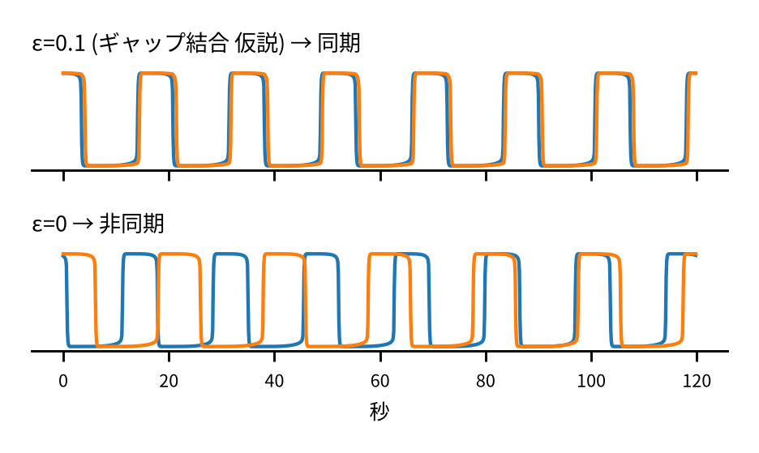
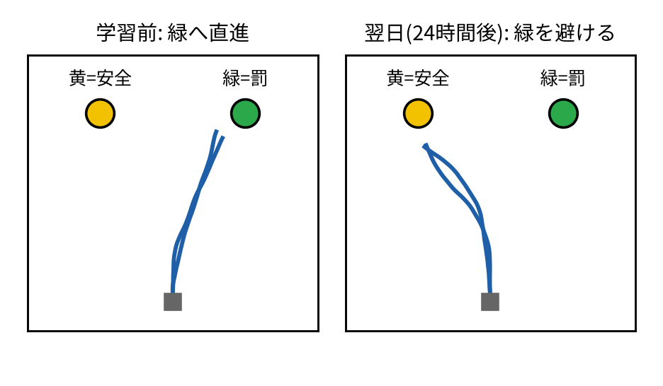
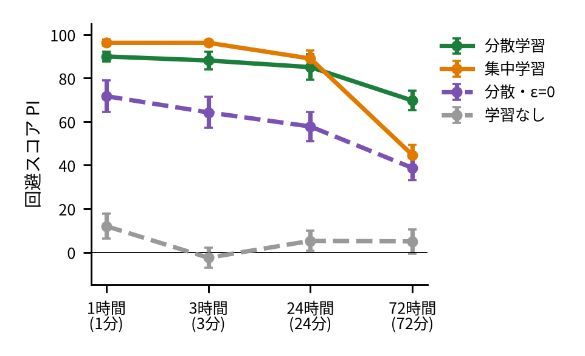

課題：配線図は完成。だが…
FlyEM MaleCNS v1.0（オス全脳の配線図）で、記憶中枢キノコ体の結線が数えられるようになった。
- ケニヨン細胞 4,064／出力MBON 97／ドーパミン細胞 PAM 316・PPL1 16
- KC→MBON だけで 463,640 シナプス
やったこと
- 実配線でモデル化し、配線シャッフルと常に比較
- Plaçais 2012・Berry 2012・Aso 2014・Pavlowsky 2018 などの実験で答え合わせ
- EM・遺伝子発現データで仮説の裏付け調査
- 二輪ロボ fly-car 用の縮約版で通し実験
ロボの"脳"スペック
- KC 100個＋MP1/MV1振動子＋3区画の記憶
- 状態 4.5 kB、UNO Qマイコン（M33 160 MHz）の約0.3%
- 60倍圧縮：1時間=1分、"翌日"=24分
配線
connectome
オス全脳EM配線図
KC・APL・MBON・DAN の実シナプス数で結合を設定
KC・APL・MBON・DAN の実シナプス数で結合を設定
▶
力学
dynamics
PPL1ドーパミン細胞 MP1・MV1 が約0.09 Hzで同期振動
リミットサイクル・多安定
リミットサイクル・多安定
▶
記憶
memory
振動が忘却と固定化を切替
集中学習→ARM
分散学習→LTM
集中学習→ARM
分散学習→LTM
▶
行動
behavior
MBON区画地図×伝達物質で近づく／避けるを決定（T字迷路スコア）
▶
ロボ
fly-car
Arduino UNO Q 上で動く縮約脳。罰を受けた色を翌日も避ける
1
実配線は"揺れやすく、記憶を抱えやすい"
KC–APLループ：実配線は約29 Hzの持続振動、シャッフル配線は g=80 まで安定。
MBON–DANループ：多安定になる割合 実配線 96% vs シャッフル 30%／49%（強い結合 G=100 を仮定）
MBON–DANループ：多安定になる割合 実配線 96% vs シャッフル 30%／49%（強い結合 G=100 を仮定）
2
Plaçais 2012 の"脳のリズム"を再現
内因性振動子＋MP1–MV1直接結合 ε≥0.05仮説で一致率 70–98%。共通入力だけでは同期 ≤22%。EMでは同側101–103の膜近接 121–159 µm²（対PPL105の10–40倍）
3
ミクロの配線が行動を決める
本物の区画地図×伝達物質で嫌悪の駆動力が 2.3倍（シャッフル比, p≈0.02）。ドーパミン操作実験7種中5種の向きを再現（1種は弱い・一部はモデルの前提に組込み済み）
4
ロボが"分散学習で長く覚える"
72時間後の回避スコア：分散 70 vs 集中 45（p=0.002）。同期を切ると(ε=0) LTM 0.23→0.07（約70%減）。脳はKC100個・4.5 kB・マイコン負荷0.3%

MP1(青)・MV1(橙)の自発振動：結合あり=同期／なし=ずれる

ロボの軌跡：赤(罰)と青(安全)の選択

記憶保持（ロボ時間 1秒=1分 に圧縮）
検証できる予測（ウェット実験で白黒つく）
① MP1/MV1の振動を止めると長期記憶(LTM)ができず、記憶はすべてARMに → タンパク質合成阻害剤が効かなくなる
② MP1–MV1結合仮説の効果は、下流が"同時発火"を読むか"平均"を読むかで有無が分かれる → shakBノックダウン＋阻害剤で判定
③ 決定実験：MP1–MV1の同時ホールセル記録で結合係数を測る（安価な第一歩：neurobiotin色素カップリング）
ここが凄い
- ミクロ→マクロを一気通貫：シナプス数から、リズム・記憶・行動・実機ロボまで同じモデルの鎖でつながる
- 実配線 vs シャッフルで「配線に意味があるか」を毎回テスト
- 文献の実験結果で答え合わせ、反証できる予測を出す
- 全データ公開・PCとマイコンで動く → 誰でも追試できる
- "記憶する虫ロボ"は見てわかるデモ：展示・教育にも強い
次の一手
- 実機化：fly-carに記憶モジュール（赤/青LED＋バンパ）、ε・振動子のON/OFFデモ付き
- "翌日"での差を出す調整（ARM減衰・本番の試行回数と消去も評価）
- 報酬学習へ拡張（Pavlowsky 2018のMBON11効果は未再現）
- 生理学者と組みMP1–MV1結合の仮説を検証
みんなで頑張ろう！
シミュレーションでは配線→力学→記憶→行動→ロボの鎖が通りました。
次は実機で「昨日の記憶で動く虫ロボ」を動かそう。
ミクロの配線がマクロの行動を変える瞬間を、この手で見届けよう！
次は実機で「昨日の記憶で動く虫ロボ」を動かそう。
ミクロの配線がマクロの行動を変える瞬間を、この手で見届けよう！